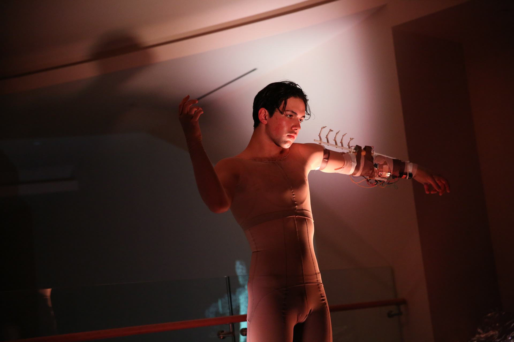
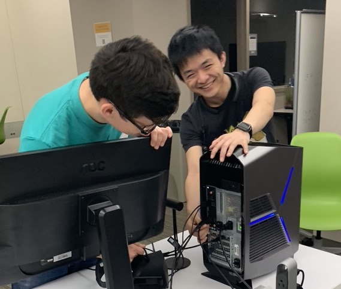

I’m Samir Ghosh, a coder and polymath who works at the Ahmanson Lab at USC
There, I manage our makerspace resources, teach workshops, and produce technologies for VR/XR experiences and hardware experiments.
Some of these projects have collaborated with the LA Times, the Vatican, and the California Science Center. I work with professors, students, and industry professionals from many fields.
Previously, I’ve made wearable technology for the fashion designer Behnaz Farahi, and worked on server farms and supercomputers at Intel. I have an academic background in computational linguistics and cognitive science.
My current goals are as follows:
Create technology for scholarly work, scientific endeavors, and creative practice
Build self-sustaining communities that share technical skill and have social impact
Use my platform as an educator for vocational equity and spark critical thinking on technology issues
I go by the handle gurumatcha in internet communities on Discord, Github, Reddit, and Twitter, so if you see me say hi!
USC community, catch me at my open lab hours or at creative code collective.
Bodyscape 2017#art
Coded and designed wearable technologies that create generative art light patterns according to model movement, and maintenance code for other brainwave-reactive and viewer-gaze reactive pieces for the fashion designer Behnaz Farahi
Retrieves archival material and renders high resolution documents for exhibition and manipulation in AR (iOS). Prototype currently works with archives at the Library of Congress and USC Libraries, and aims to work with most major archive systems. Release in May 2021. Project supported by a Collaboratory at the Ahmanson Lab.
Corpus Callosum 2015-2017#community
Grew a technology+arts student organization in the USC Viterbi School of Engineering to 100+ members as technical director. Exhibited about a dozen projects every year and created communal knowledge of openFrameworks, Arduino, Raspberry Pi, Processing, and web development.
EMBODY 2019#art

Created code and circuitry for an exoskeleton arm and chestplate that reacted to muscle neural activation for a performative dance exhibition. Created by Nico Pizzati and Maria Camasmie. Supported by the Ahmanson Lab Working Group program. Project supported by a Working Group at the Ahmanson Lab.
In lieu of hardware based programming, the Ahmanson Lab’s Fall 2020 workshops were paired with a competition where the winner would get their design printed on a sticker and participants would receive this sticker as a token for participation.
Terraforming Mars VR 2018#XR
Terraforming Mars is a VR project that exhibits undergraduate research for how Mars would look like in various stages of settlement. Novel ways of editing multimedia content in Unity from a Google Sheet so non-technical people can quickly iterate on parts of the VR environment. Led by professors in Physics and Creative Writing, with mentorship form NASA JPL and the USC World Building Lab. Project supported by a collaboratory at the Ahmanson Lab.
After establishing an open EEG lab on campus, a group led by Garrett Flynn won a Visions and Voices grant to exhibit generative art based on brainwave data and hold a panel to discuss bioethics issues surrounding neuroprosthetics, presented under a speculative fiction company called Mousai Neurotechnologies. In lieu of an in-person event, we are building software infrastructure to livestream brain data analysis. Uses new techniques in WebGL, and supported by an open OpenBCI sponsorship and USC Viterbi faculty. Event and software release in April 2021. Project supported by a Working Group at the Ahmanson Lab.
Collaborative effort with biomedical device makers, opthalmologists, and computer scientists to perform deep learning on retinal biomarkers for neurodegenerative pathologies such as Alzheimer’s and B12 deficiencies. I contribute data processing and I am experimenting with commercially implementable deep learning models. In the process of fundraising through biomedical investors and NIH grants.
Open Streaming Lab 2018#community

After setting up an streaming lab infrastructure with VR and podcasting capabilities with the now famous Eret, we created a massive Discord community and Twitch team of collegiate streamers that share a viewership of over 500k viewers. This community works with Prof. Gordon Bellamy who has made a class about streaming that empowers the next generation of influencers. Project supported by a Working Group at the Ahmanson Lab.
Diwali on the Styx current#art
As a submission to Generative Unfoldings, I created a fragment shader that studies hydrology motion. Iteration includes water reflection and water collection. This work has brought knowledge to a variety of other projects in the USC community that are starting to leverage WebGL.
A web enabled VR reconstruction of the Stanza del Segnatura during Pope Julius II that features text from the 16th century art historian Vasari, and annotations. Done in coordination with the USC Libraries Special Collections and The Vatican. Project supported by a Collaboratory at the Ahmanson Lab.
Tool to automatically build web enabled VR galleries of photos and annotations. Integrates with Scalar, a tool for digital humanities authoring, and Google Sheets. Project supported by a Collaboratory at the Ahmanson Lab.
My administrative effort to allocate resources to highly motivated students to tackle projects that use new technologies or examine new phenomena. On the technical side, students have used deep learning for FPGA design and audio synthesis. On a critical side, students have established think tanks on internet memes and streaming influence. It brings about 50 highly skilled and driven students to the lab every semester and establishes resources and techniques for the broader USC community.
Polymathic Making Workshops are a series I run every semester at the Ahmanson Lab that range from introductory topics in 3D printing or generative art, to advanced topics such as deepfakes and AR development. All of these workshops aim to teach a practical skill as well as critical issues in the technology’s history and current influence.